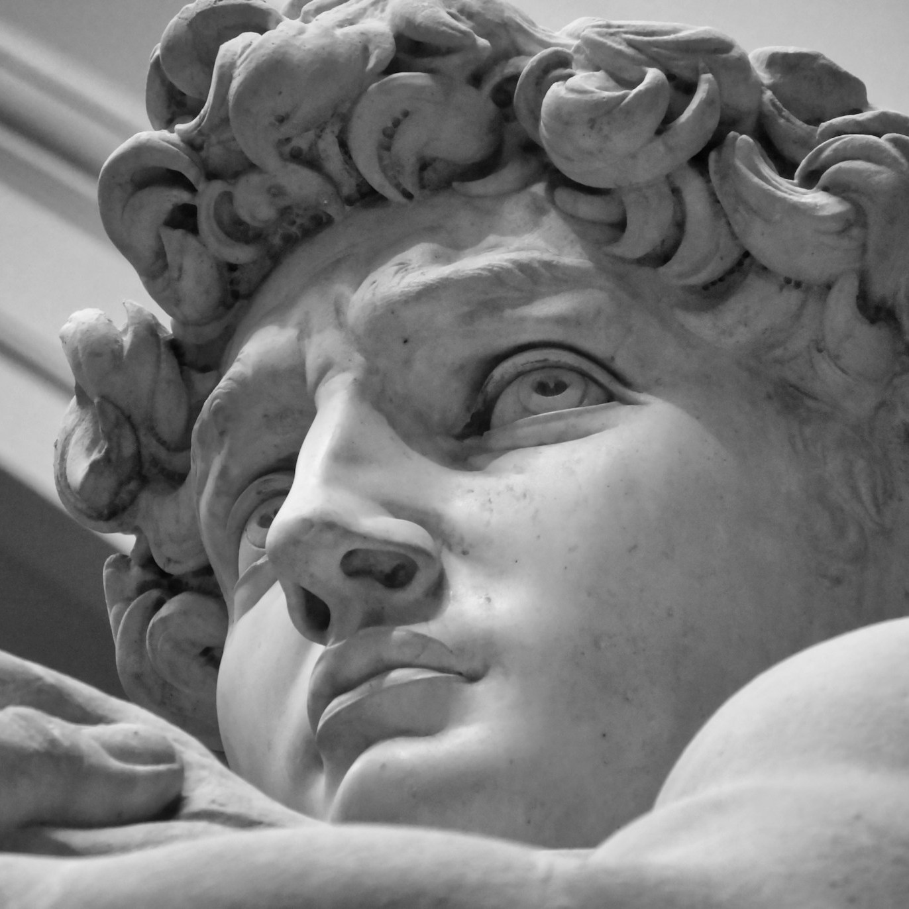

David by Michelangelo

The sculpture of David was created between 1501 and 1504 by Michelangelo Buonarroti, an artist from the Italian Renaissance era. David is arguably one of the greatest works of art that were created from marble and is located on the Florence Cathedral. The sculpture is carved from one large stone of Carrara marble that was previously rejected by other sculptors.
Unlike the previous Renaissance artists who depicted the victorious scene of David after he killed Goliath and held his decapitated head, Michelangelo managed to depict the pre-battle moment of David just before he started his fight. Michelangelo shows how David is standing in a relaxed but concentrated posture that can be characterized as a classical contrapposto, with a sling on his shoulder.
Apart from its origins in the Bible, David soon became a very powerful civic symbol of the Republic of Florence that represented an autonomous city-state standing up to fight for its civil rights against bigger tyrant neighbors. Initially located outside of Palazzo della Signoria, the original statue was transferred in 1873 to the Galleria dell'Accademia in Florence to protect it from environmental damage.